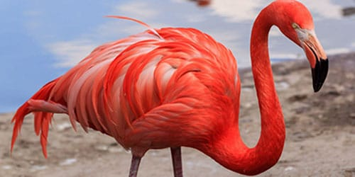

Обыкновенный фламинго – птица большая, ее рост часто превышает 1,2 м. Вес самок в среднем 2,5 кг., особи мужского пола – 3 кг. Большую часть своей жизни проводят в воде. На неглубоких местах водоемов они ищут себе пищу. В их рационе преобладает планктон, который они «выцеживают» из воды. |
 |